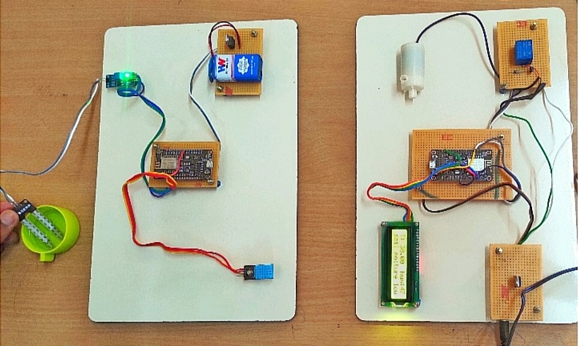
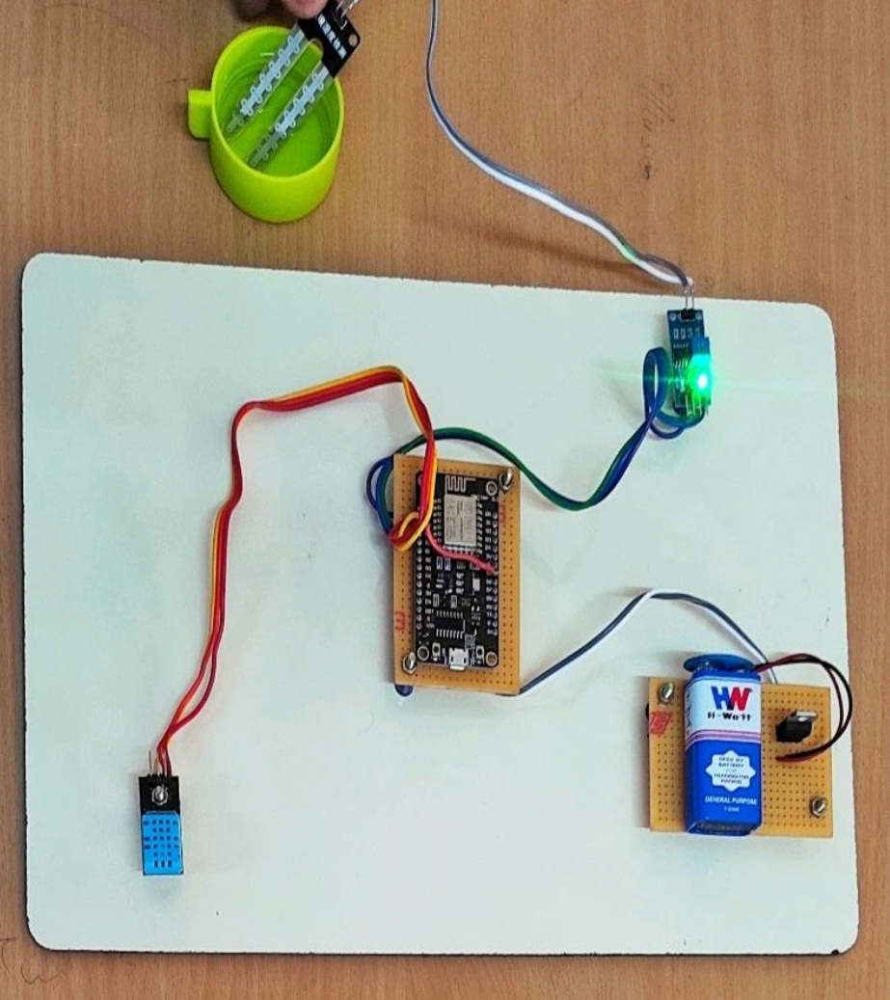
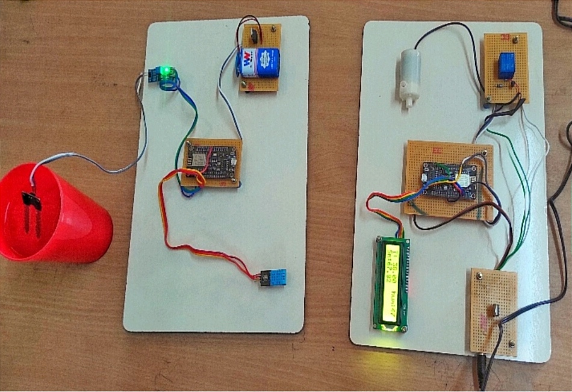
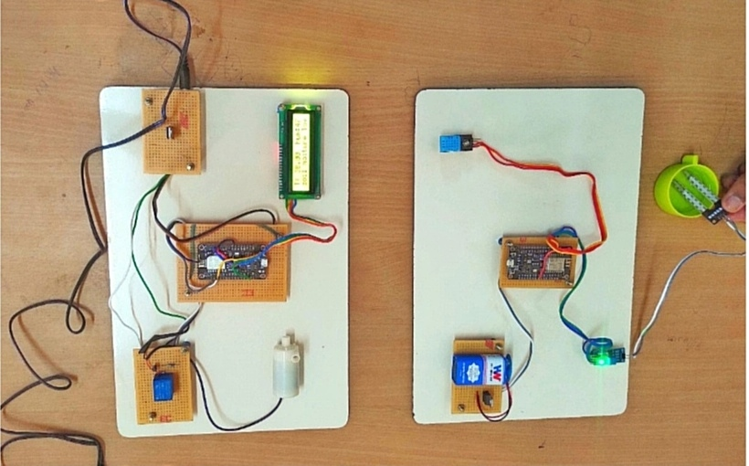

Introduction of a cost-effective wireless sensor network (WSN) based irrigation system for agriculture ,Utilization of WSNs for real-time monitoring of soil conditions like moisture,temperature, and humidity,Aim to democratize advanced agricultural technologies for smallholder farmers and resource-limited areas, Emphasis on precision agriculture for targeted resource application and optimized water usage,Alignment with sustainability goals by promoting efficient water management and enhancing agricultural productivity
The system combines a DHT11 sensor for temperature and humidity, a NODEMCU microcontroller, a 9V battery, and a soil moisture sensor for versatile environmental monitoring,DHT11 sensor provides real-time data on temperature and humidity,NODEMCU microcontroller processes data and facilitates wireless communication,Continuous monitoring of environmental conditions and soil moisture enables informed decisions in agriculture and horticulture,Low-cost components and open-source nature make it accessible and adaptable.
The intelligent irrigation scheduling system utilizing a low-cost wireless sensor network represents a transformative paradigm shift in agriculture,Wireless sensor networks offer real-time data on soil moisture, temperature, and humidity, democratizing access to advanced farming tech.These sensors communicate wirelessly with a central control unit , which processes the data and executes irrigation scheduling algorithms based on predefined criteria
Soil moisture sensors aid in this by providing real-time data for irrigation scheduling.Placing sensors at various depths and locations in the field,It is also made in automation mode in such a way that if the sensor output is less than the required field water level value, the pump motor will be turned on and will feed the required water level to the field.
The prototype is designed in such a way that farmers can able to control the ON and OFF of water pump motor,It can be triggered ON/OFF by sending signals as required,The soil moisture sensor value is reached 40 the pump motor will be OFF state and the soil moisture value is reached less than 40 the motor will be ON
 In conclusion, the development and implementation of an intelligent irrigation scheduling system utilizing a low-cost wireless sensor network (WSN) represent a significant stride towards achieving sustainable and precision agriculture practices.By harnessing the power of modern technologies, this system offers a cost-effective and scalable solution to optimize water usage, enhance crop productivity, and mitigate environmental impact.Through precision irrigation scheduling, it minimizes water wastage, maximizes yields, and addresses challenges like climate change and water scarcity